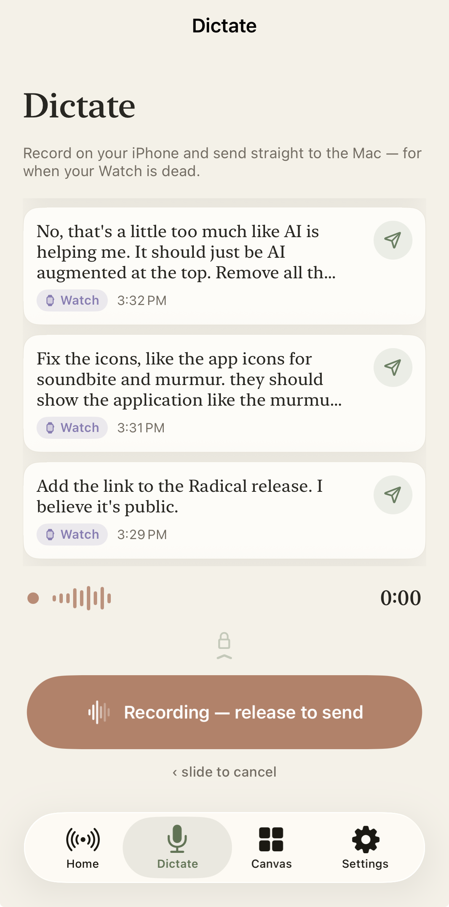
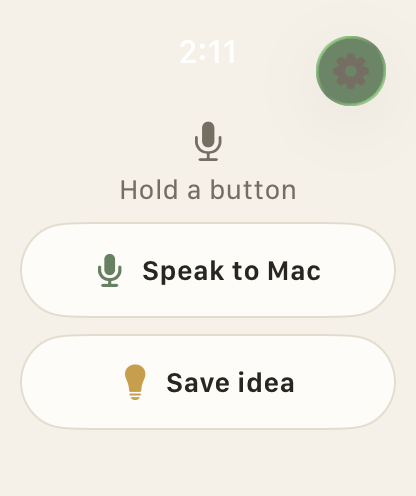

01 · On-device AI · Mac · Watch
Murmur
Hold a button on your Apple Watch, whisper, and the transcript types into the frontmost Mac app. Local speech-to-text with a searchable history dashboard.
I ship production AI systems and the ops software companies run on: LLM gateways, agent tooling, and regulated medical-device platforms, plus native Apple apps.
See the work ↓I design and ship the internal software platform that runs manufacturing, QA, logistics, fleet release, analytics, and company-wide LLM access for a Class 1A medical-device company.
Knox Manage release framework: tiered rollouts, legacy-device groups, OAuth token rotation across Android tablets.
Progressive delivery cut failed updates roughly sixfold, reducing field and support firefighting after each release.
Production SPA for kitting, PTA, and DHR: down from 30 to 45 minutes of manual entry and hand-assembled PDFs.
Salesforce-parameterized registration flow from first contact to device activation; unlocked a major distribution partnership.
Inventory and QMS tracking for Class 1A devices with Salesforce + FedEx logistics; 1,000+ unit shipments at prior capacity.
Company-wide Claude Queue gateway: multi-app submit/poll, model routing, tool-use progress; replaced scattered API keys.
Used daily by ~25 people across manufacturing (5–8 floor), QA (~9), support, CS, and leadership.
Release-scoped testing with AI-drafted Jira bugs and stakeholder sign-off before fleet push.
Higher inventory and bulk logistics throughput on the Class 1A production path (revenue capacity from volume, not a pricing change).
Production LLM systems and agent tooling first. Shared gateway used company-wide, then open skills that make coding agents reliable.
Company-wide LLM job queue: apps submit prompts, a local worker runs Claude CLI, results poll back. Model routing, tool-use progress, OAuth-scoped access. 50-100 prompts/day across internal tools. No public endpoints, no cloud API keys on the worker path.
Keeps project CLAUDE.md honest: updates stale sections, appends a length-capped dated current-state block, archives older entries, commits the docs, and prints a paste-ready handoff for the next session.
Builds first-run tours from real app screen recordings, not mockups: app-drawn touch indicators, simulator and window capture, ffmpeg cut pipeline, and gapless loop players in a paged card UI.
Paginated HTML documents that print cleanly to PDF. Agents edit HTML far more reliably than PDF; browser print exports the final artifact.
The day job runs on software I built: a suite of internal web apps covering manufacturing, logistics, quality, and support operations at RadiusXR.
Web app that runs the manufacturing floor: barcode-scan stations for build, test, and pack, full component traceability, and auto-generated device history records for every unit, plus an activity log with undo for operator mistakes.
Aggregates product telemetry into trial, onboarding, and device-utilization KPIs for leadership and customer success, with AI-drafted reports on demand.
Tracks every return from RMA creation to receipt: syncs return records from Salesforce, coordinates inbound shipping, and routes refurbished units back into sellable inventory.
Headless pipeline that collects carrier tracking statuses for open shipments and writes delivery updates into shared operations spreadsheets, so nobody checks tracking numbers by hand.
Coordinates user acceptance testing for each release: testers log results in one place, failures become AI-drafted Jira tickets, and release readiness is visible at a glance.
The legacy automation suite the newer tools grew out of: device programming, phone-based floor scanning, data migration, and field-service workflows bound directly to the operations spreadsheet.


Hold a button on your Apple Watch, whisper, and the transcript types into the frontmost Mac app. Local speech-to-text with a searchable history dashboard.
Turns articles into narrated audio. Save from Safari, read along with karaoke-style captions, and catch up with daily briefs.
Native workout tracker with a custom workout builder, AI-powered analysis, progress charts, and Apple Health sync.
Menu-bar screenshot tool with annotation editor, chaining, and OCR smart filenames.
Turns adb and scrcpy into one-click Android mirroring and wireless debugging.
Identifies playing songs and shows time-synced lyrics with a hero typography view.
Lead cross-functional product initiatives across engineering, clinical, QMS, and external advisors. Own release management end-to-end and spearhead MDSAP audit readiness.
Spearheaded automated onboarding flows, engineered inventory tracking systems, and owned device release management for 4,000+ Android devices.
Resolved complex software issues, built Python automation increasing resolution capacity by 30%, optimized SQL queries reducing execution time by 40%.
Developed automated supplier invoice approval workflows and comprehensive test automation suites.
I run an automated productivity loop around Claude Code. Custom routines scan my inboxes and notes for open items, turn quick captures into structured tasks and logs, and sync everything into an Obsidian knowledge base across devices. No manual triage, no lost context.